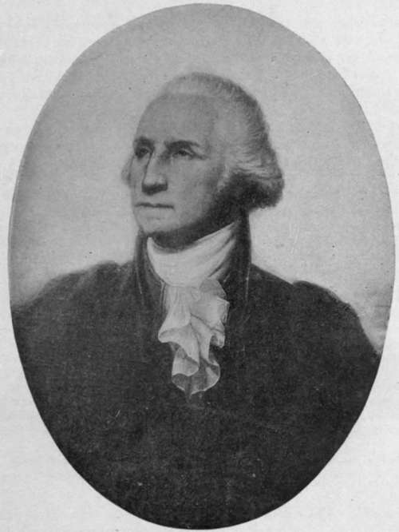

City Of Washington. Part 2
Description
This section is from the book "The National Capitol. Its Architecture Art And History", by George C. Hazelton, Jr. Also available from Amazon: The National Capitol Its Architecture Art and History.
City Of Washington. Part 2
Jefferson in his ana records a bit of inside history regarding the final settlement of the controversy by Congress in favor of the Potomac, and only the growth of the city and its grandeur to-day compensate for the somewhat doubtful means by which, according to his record, that end was secured. To aid Alexander Hamilton in his pet hobby, a bill for the assumption by the general government of the debts contracted by the various States during the Revolution, amounting to $20,000,000, he invited certain Congressmen to dine. The host does not record whether it was before or after the wine that the compromise was reached, but certain it is that at that feast votes for the assumption of the State debts were pledged by Representatives of the Southern States in exchange for votes from the Eastern, or creditor States, to establish the seat of government permanently upon the banks of the Potomac.
The influence of the President also had been a powerful factor in favor of the Potomac; and, though empowered with discretion to select any site within one hundred and five miles of the river's windings, beginning at Williamsport, seven miles above Hagerstown in Maryland, all must agree with Mr. Spofford, the Librarian, that " Washington, with that consummate judgment which distinguished his career, fixed upon just the one spot in the entire range of the territory prescribed by Congress which commanded the threefold advantages of unfailing tide-water navigation, convenient access from Baltimore and the othef large cities northward, and superb natural sites, alike for public buildings and for the varied wants of a populous city".
Almost immediately, the President appointed Thomas Johnson and Daniel Carroll of Maryland and David Stuart of Virginia as Commissioners; and, no doubt, gave specific directions for surveying and laying off the tract of land for the seat of government, as he was more familiar with the region than most of his contemporaries. The first survey above tide-water on the Potomac had been made by himself, with a party of friends, in a " piroque," or canoe, described by G. W. P. Custis as " hollowed out of a great poplar tree, hauled on a wagon to the bank of the Monocacy, and there launched".
Wise, however, as he was in the choice of the site, it is noticeable that Washington selected it as near as possible, under the act, to his own home at Mount Vernon; and in the amendment of March 3, 1791, his hand can be plainly seen. This, while it still limited the erection of he public buildings to the Maryland side of the Potomac, allowed a portion of the district to be located below the Eastern Branch and above the mouth of Hunting Creek, so as to include a convenient part of the Branch and the town of Alexandria.
The great man watched with anxiety over the founding of the Federal City, which was to bear his name, and with eagerness hastened the erection of its government buildings, as if with them to anchor public interest to the spot on which his hopes raised a city whose destiny was to be kindred to the growth and grandeur of a nation of the people. Himself a Federalist, he doubtless foresaw as well, in this one Capitol, an ultimate recognition of Federal supremacy, and, in a perfect union, respectful alike to State and nation, a government strong enough to protect itself and its every citizen.
Perhaps no greater obstacle opposed the path of President Washington than the old Scotch proprietor, David Burns, who owned a tract of six hundred and fifty acres in the heart of the proposed city. He refused to part with his plantation, which was known as the " Widow's Mite," upon any terms. To Washington's most patriotic appeals he is said to have irritably replied : " If it had not been for the Widow Custis and her niggers, you would never have been anything but a land surveyor, and a very poor surveyor at that." He was compelled, in the end, however, to yield to the public interest. On March 30, 1791, nineteen of the principal proprietors signed the agreement, which was accepted by the Commissioners on the 12th of the next month :
" To convey in trust * to the President of the United States, or Commissioners, or to such person or persons as he shall appoint, by good and sufficient deeds in fee simple, the whole of our respective lands which he may think proper to include within the lines of the federal city, for the purposes and on the conditions following : The President shall have the sole power of directing the federal city to be laid off in what manner he pleases. He may retain any number of public squares he may think proper for public improvements or other public uses ; and lots only which shall be laid off shall be a joint property between the trustees on behalf of the public and each present proprietor, and the same shall be fairly and equally denned between the public and the individuals. As soon as may be the site shall be laid off. For the streets the proprietors shall receive no compensation, but for the squares or lands in any form which shall be taken for public buildings or any kind of public improvements or uses the proprietors whose lands shall be taken shall receive at the rate of ,£25 per acre to be paid by the public".
* The several trustees v named in the deeds, dated on or about June, 1791, were " Thomas Beall, of George, and John M. Gantt, and the survivor of them, and the heirs of such survivor".
Washington By Rembrandt Peale.
Peter Charles L'Eniant, a civil engineer who came to this country about 1777, was employed by President Washington's direction to prepare plans for the proposed city. He had become a major in the Engineer Corps during the war for Independence, and later had followed the seat of government successively from New York to Philadelphia, and thence to Washington. L'Enfant carefully " viewed the ground on horse-back " with the President and Commissioners, and in a report handed personally to Washington in Georgetown on the 26th of March, 1791, enthusiastically indorsed, in somewhat Franco-English, the location as a site for the capital of a " mighty empire " :
Continue to: